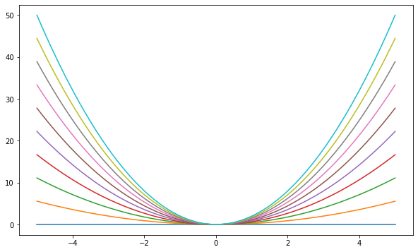

17.12. Assigment 2#
Instructions: This problem set should be done individually.
Answer each question in the designated space below.
After you are done, save and upload in blackboard.
Please check that you are submitting the correct file. One way to avoid mistakes is to save it with a different name.
17.13. Write your name and simon email#
Please write names below
[Name]:
[email]:
17.14. Discussion Forum Assignment#
Do the “New Facts” assigment: https://edstem.org/us/courses/30665/discussion/1972562.
17.15. Exercises#
17.15.1. Function and Numpy#
Exercise 1
Define a function named var that takes a list (call it x) and
computes the variance. This function should use the mean function that we
defined in chapter 4.4.
Hint: \( \text{variance} = \sum_i^I (x_i - \text{mean}(x))^2/I \).
Then show that this works with this list x = np.random.rand(10000).
# Your code here.
Exercise 2
Import the numpy package under the name np, then create a 3d numpy array using the following list. Label this array x_3d.
templist=[[[1, 2, 3], [4, 5, 6]], [[10, 20, 30], [40, 50, 60]]]
# your code here
print(x_3d)
type(x_3d)
Exercise 3
Extract (1) the number 5, (2) the array [[5, 6], [50, 60]] from x_3d
# select 5 and print
# select [[5,6], [50,60]] and print
Exercise 4
Create a zero vector of size 10, then replace the fifth value with 1.
Exercise 5
Do you recall what multiplication by an integer did for lists? How does mulitplying an array is different?
(1) create a list of [1,2,3]
(2) multiply the list by 2 and print
(3) create an array using the list of [1,2,3]
(4) multiply the array by 2 and print
Explain the difference
#code here
#explain here
Exercise 6
Consider the polynomial expression
Write a function that does the same job
(1) function input: a, x
(2) function output: p
(3) uses NumPy arrays and array operations for its computations, rather than any form of Python loop.
(4) do not use pre-defined function np.poly1d
(5) demonstrate it works using a vector of a=[0.2,0.3,0.1,0.5,0.7] and x=0.3.
def poly(a, x):
# your code here
return p
# test your function here
Exercise 7
Reverse a vector (first element becomes last).
a=np.array([0.2,0.3,0.1,0.5,0.7])
# your code here
Exercise 8
Create a 3x3 matrix with values ranging from 0 to 8.
Exercise 9
Create a 3x3 identity matrix.
Exercise 10
Create a 10x10 array with random values and find the minimum and maximum values.
Exercise 11
Create and normalize a 5x5 random matrix so that all its entries add up to 1.
Exercise 12
Create a vector of size 10 with values ranging from 0 to 1, both exclusive (exclude 0 and 1).
Exercise 13
Find the closest value (to a given scalar \(a\)) in a vector \(x\)
a=0.5
x=np.array([0.18178469, 0.00253498, 0.82598284, 0.56536106, 0.34953837, 0.04747678,
0.46308758, 0.37809284, 0.95064092, 0.51180091])
# your code here
Exercise 14
Build a 4 by 4 matrix with any numbers of your choosing, then subtract the mean of each row of a matrix.
Exercise 15
Sort the matrix you build above according to column 3.
Exercise 16
Plot the function
over the interval \( [0, 5] \) for each \( \theta \) in np.linspace(0, 2, 10).
Place all the curves in the same figure.
The output should look like this 
%matplotlib inline
import numpy as np
import matplotlib.pyplot as plt
plt.rcParams["figure.figsize"] = (10, 6) #set default figure size
fig, ax = plt.subplots()
# TODO: define an array of theta below using np.linspace(0, 2, 10)
# TODO: define an array of x below using np.linspace(-5, 5, 200)
for i in theta:
# TODO: define y=f(x) below
ax.plot(x, y)
plt.show()
17.15.2. Applications#
Exercise 17
Let’s revisit a bond pricing example we saw in Control flow.
Recall that the equation for pricing a bond with coupon payment \( C \), face value \( M \), yield to maturity \( i \), and periods to maturity is \( N \).
In the code cell below, we have defined variables for i, M and C.
Do the followings:
Define a numpy array
Nthat contains 10 periods to maturities from 1 to 10 (hint look at thenp.arangefunction).
Define a numpy array
CFthat contains the cash flow from year 1 to year 10.
Use
NandCFthat you just defined, define a numpy arraydCFthat contains the discounted cash flow from year 1 to year 10.
Comupte the bond price by summing over
dCF
i = 0.03
M = 100
C = 5
# Define N array below
# Define CF array below
# Define dCF array below
# calculate price bonds below
Exercise 18
Alice is a stock broker who owns two types of assets: A and B. She owns 100 units of asset A and 50 units of asset B.
The current interest rate is 5%.
Each of the A assets has a remaining maturity of 6 years and pays 1500 each year, while each of the B assets has a remaining maturity of 4 years and pays 500 each year.
Alice would like to retire if she can sell her assets for more than \$500,000. Use vector addition, scalar multiplication, and dot products to determine whether she can retire.
Hint: Use the interest rate to compute the value of each asset, then compute the overall value of Alice portfolio. Following the similar steps in the previous question for asset A and B, respectively.
r=0.05
# your code below